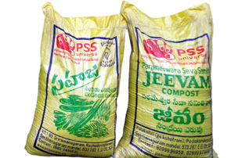
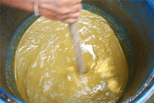
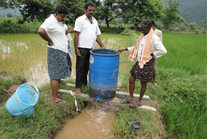
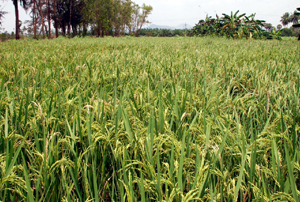
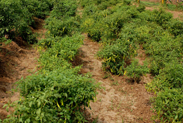
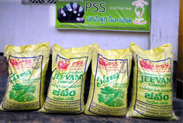
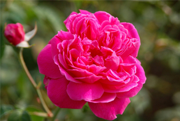
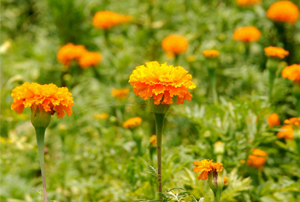
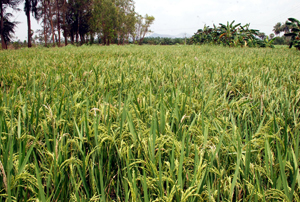

Natural farming
Started in 2010, PSS has been spearheading an agrarian programme that seeks to rejuvenate the natural balance of soil fertility by streamlining herbicide brands called Jeevam and Jeevamrutham. Jeevam is a solid compost that has microorganisms from cow dung along with other herbal components. Jeevamrutham is a liquid concoction that helps multiply the microorganisms resident in soil so as to construe an organic matrix that helps fight pests.
PSS initially experimented with these herbicides in farms owned by the organisation. Eventually the herbicides were branded as products and are noe being sold to farmers across the State of Andhra Pradesh. Thousands of acres of land are being cultivated using these herbicides. Commercial as well as staple crops are being grown.








